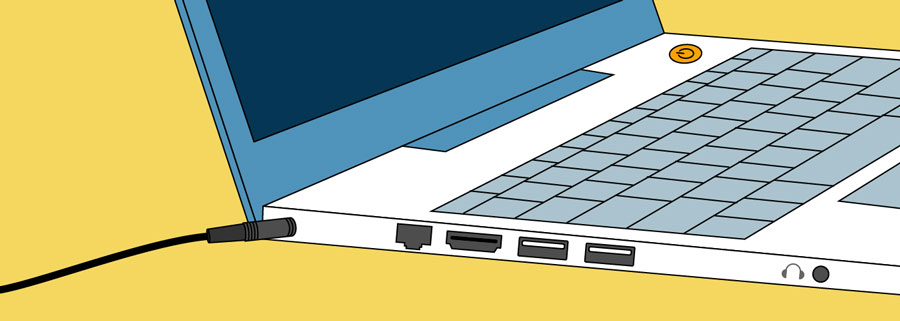
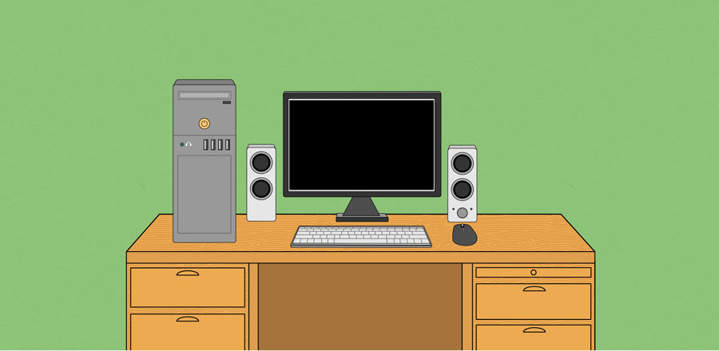
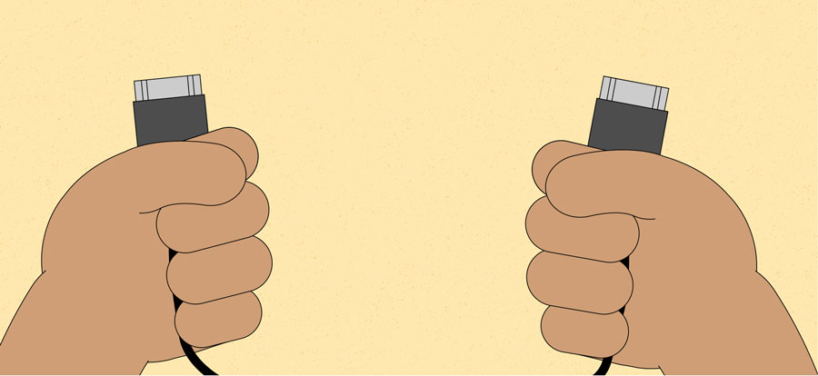
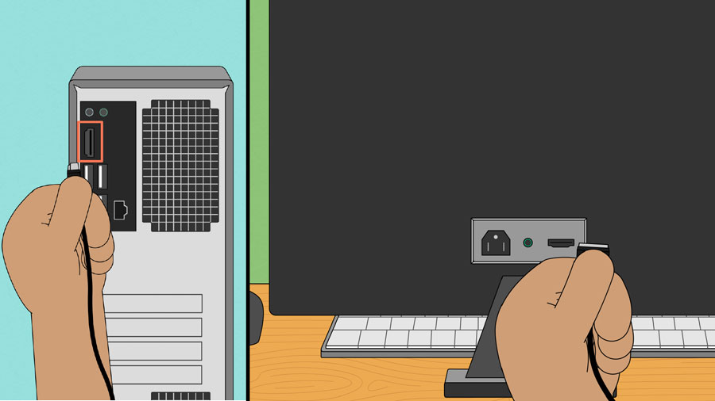
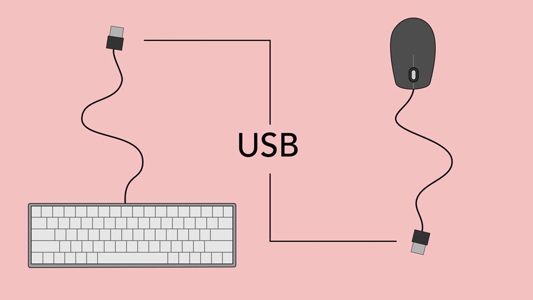
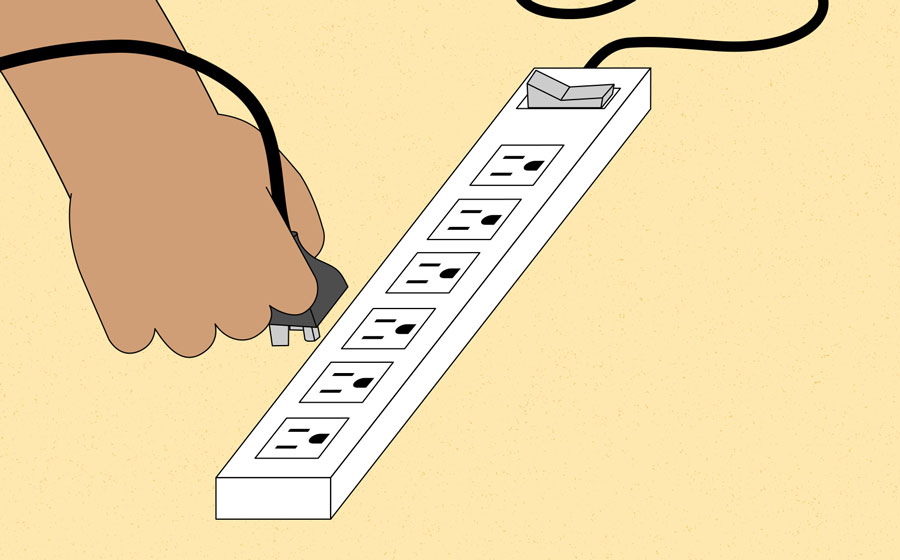
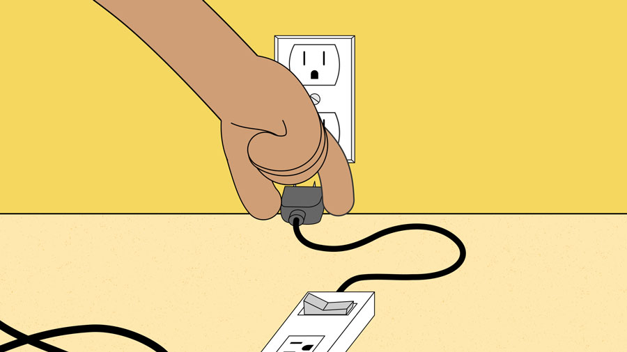
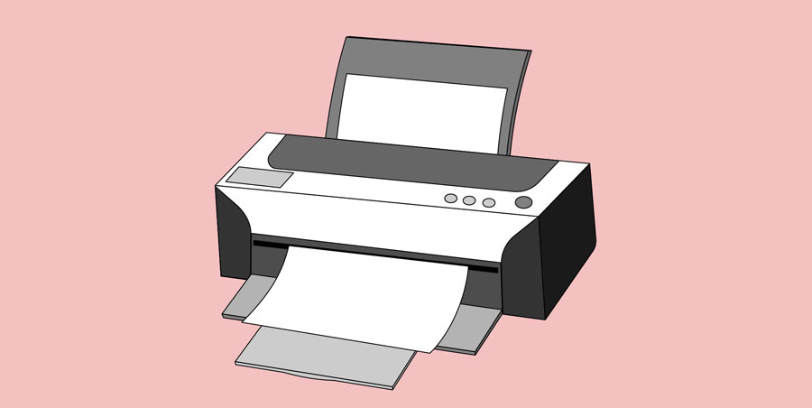

Computer Basics: Setting Up a Computer
Setting up a computer
So you have a new computer and you're ready to set it up. This may seem like an overwhelming and complicated task, but it's actually a lot easier than you might think! Most computers are set up in a similar way, so it doesn't matter what brand of computer you have.
If you're setting up a new computer that's still in the box, you'll probably find a how-to guide that includes step-by-step details. Even if it didn't include instructions, you can still set up the computer in a few easy steps. We'll take you through the different steps needed to set up a typical computer.
Setting up a laptop computer
If you have a laptop, setup should be easy: Just open it and press the power button. If the battery isn't charged, you'll need to plug in the AC adapter. You can continue using the laptop while it charges.
If your laptop has any peripherals, like external speakers, you may want to read the instructions below. Laptops and desktops generally use the same types of connections, so the same steps will still apply.
Setting up a desktop computer
Step 1
Unpack the monitor and computer case from the box. Remove any plastic covering or protective tape. Place the monitor and computer case on a desk or work area.
Be sure to place your computer case in an area that is well ventilated and has good air flow. This will help to prevent the computer from overheating.
Step 2
Locate the monitor cable. There are several types of monitor cables, so the one for your computer may not look like the one in the image below.
If you're having trouble finding your monitor cable, refer to the instruction manual for your computer. (If you have an all-in-one computer that's built into the monitor, you can skip to Step 4 ).
Step 3
Connect one end of the cable to the monitor port on the back of the computer case and the other end to the monitor.
Step 4
Unpack the keyboard and determine whether it uses a USB (rectangular) connector or a PS/2 (round) connector. If it uses a USB connector, plug it into any of the USB ports on the back of the computer. If it uses a PS/2 connector, plug it into the purple keyboard port on the back of the computer.
Step 5
Unpack the mouse and determine whether it uses a USB or PS/2 connector. If it uses a USB connector, plug it into any of the USB ports on the back of the computer. If it uses a PS/2 connector, plug it into the green mouse port on the back of the computer.
Note: If your keyboard has a USB port, you can connect your mouse to the keyboard instead of connecting it directly to your computer.
Note: If you have a wireless mouse or keyboard, you may need to connect a Bluetooth dongle (USB adapter) to your computer. However, many computers have built-in Bluetooth, so an adapter may not be necessary.
Step 6
If you have external speakers or headphones, you can connect them to your computer's audio port (either on the front or back of the computer case). Many computers have color-coded ports. Speakers or headphones connect to the green port, and microphones connect to the pink port. The blue port is the line in, which can be used with other types of devices.

Some speakers, headphones, and microphones have USB connectors instead of the usual audio plug. These can be connected to any USB port. In addition, many computers have speakers or microphones built into the monitor.
Step 7
Locate the two power supply cables that came with your computer. Plug the first power supply cable into the back of the computer case and then into a surge protector. Then, using the other cable, connect the monitor to the surge protector.
Note:You can also use an uninterruptable power supply (UPS), which acts as a surge protector and provides temporary power if there is a power outage.
Step 8
Finally, plug the surge protector into a wall outlet. You may also need to turn on the surge protector if it has a power switch.
Note: If you don't have a surge protector, you can plug the computer directly into the wall. However, this is not recommended because electrical surges can damage your computer.
Step 9
If you have a printer, scanner, webcam, or other peripherals, you can connect them at this point. Many peripherals are plug and play, which means they will be recognized by your computer as soon as they are plugged in.
Other peripherals may include software that needs to be installed before you can begin using them. Use the instructions included with the device to install it if necessary.
Note: Generally, peripherals are optional, and you can add new ones at any time; you don't have to add all peripherals during the initial setup of your computer.
Setup complete!
That's it—you've finished setting up your computer, so it's time to start using it! We'll talk more about how to use your computer over the next several lessons.